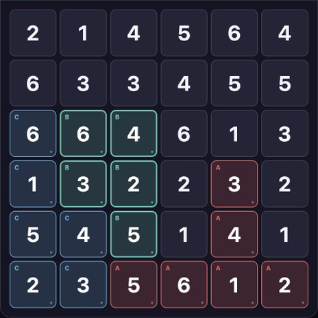

REVIEWER MATERIALS · UPDATED 8 OCTOBER 2026
I’m Ahmed, Tessera’s developer. In Logic, you split a numbered grid into connected regions of equal size. Each region needs each number once; cells connect along edges, never just corners.
Try the free one-puzzle sampler
No install, account or ads in the sampler. Optional play-step measurement is off until the visitor chooses it.
56 seconds, silent captions. The first 25 seconds show actual browser interaction at its original timing, followed by a held state and genuine mobile game captures. This is an explanation, not a recording of a first-time player.
Download the explanation (MP4) · Download clean 25-second board footage (MP4)

These materials use actual game or sampler pixels. Coding assistants, including Codex and Claude, helped build Tessera; AI assistance was also used to prepare this page and its explanatory captions. There are no invented player reactions, reviews or claims about learning benefits. The sampler is one fixed 6×6 board, not the complete mobile game. We do not claim that every large board has a unique solution.
These files are provided for coverage of Tessera. Please credit Tessera / Ahmed Alameldin (Gaborandi). For questions: a.alameldien@gmail.com.